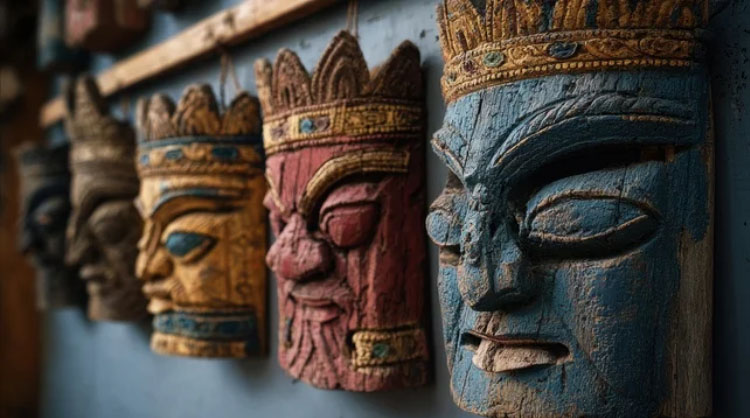
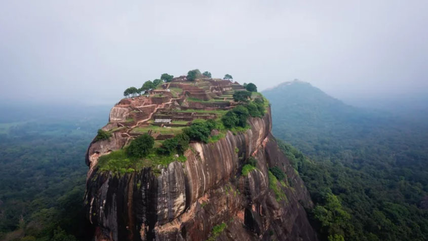
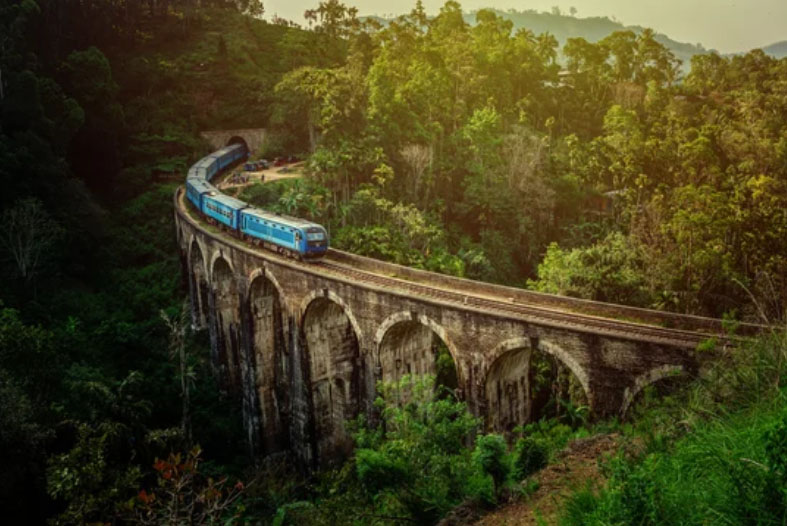
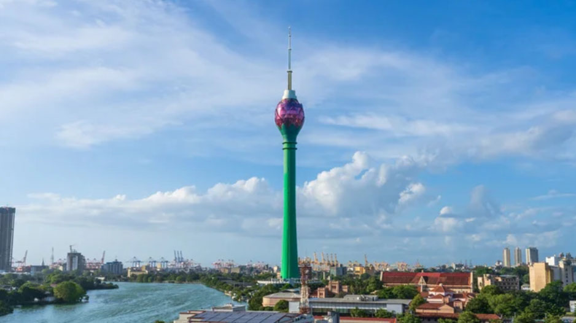
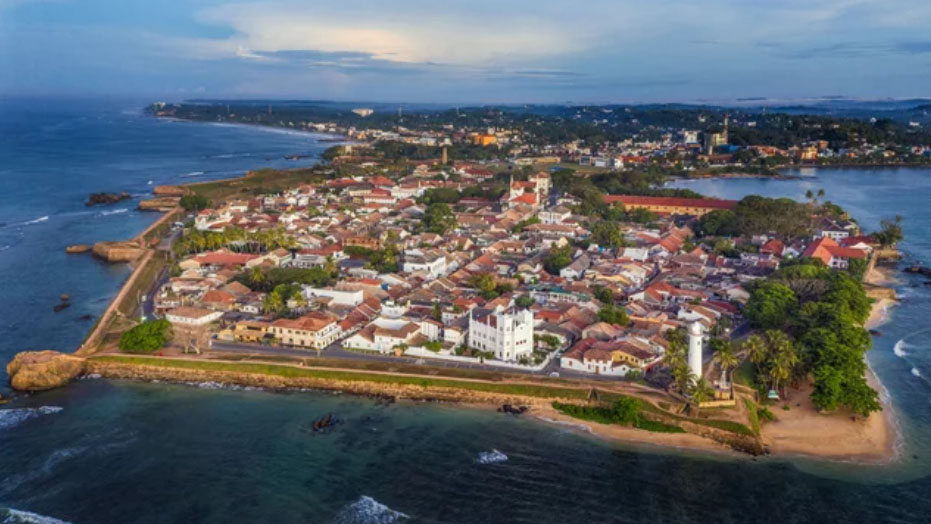
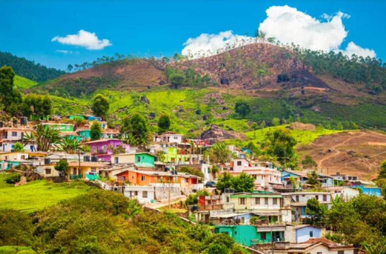
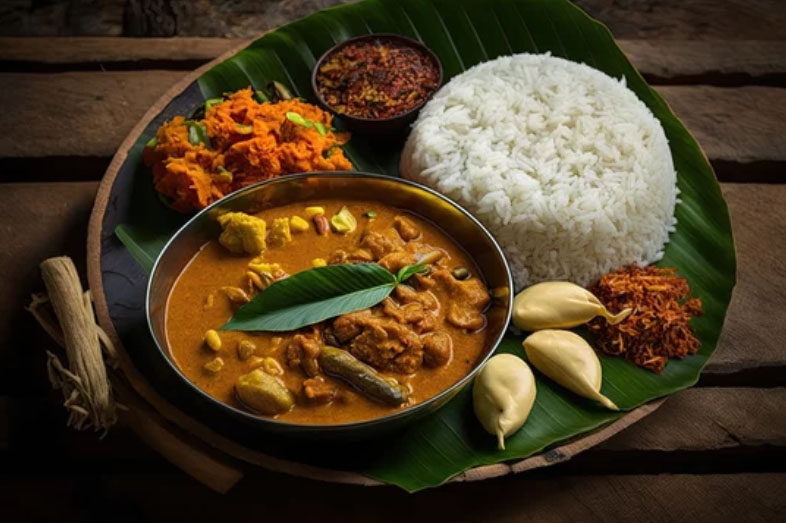
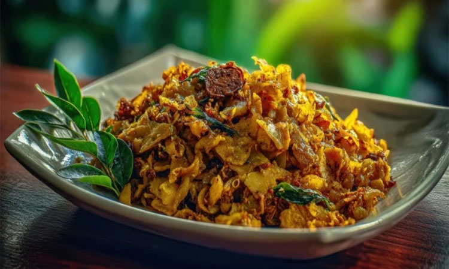
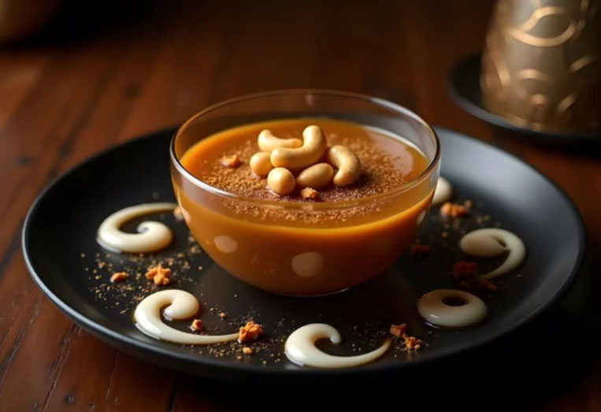

Island soul, tropical heart.
Sri Lanka: Lost in the timeless whispers of ancient ruins and golden sunsets.
Grateful for mornings that taste like Ceylon and sound like the wild. Amma’s cooking and the island’s spirit—Sri Lanka, you have my heart.
Island of Sacred Echoes & Timeless Beauty
Iconic Landmarks
From ancient rock fortresses to misty tea hills and golden temples, journey through Sri Lanka’s living heritage where history, faith, and nature intertwine.

Sigiriya Rock
It is the ruins of a 5th-century fortress built atop a विशाल rock formation, often referred to as the "Palace in the Sky.
Temple of the Sacred Tooth Relic
Located in the ancient city of Kandy, this is a sacred site where a tooth relic of the Buddha is enshrined.

Mausoleum of Imam Ali (Blue Mosque)
A beautiful stone railway bridge located in Ella, spanning between rolling tea-covered hills.
Ancient Crossroads & Living Cities
Cities of Distinction
From the salt-sprayed ramparts of Galle to the restless energy of Colombo and the misty highlands of Nuwara Eliya, discover cities where colonial echoes meet the vibrant pulse of modern Sri Lankan life.

Colombo
An energetic port city at the heart of the economy, where historic colonial architecture stands alongside ultra-modern skyscrapers.

Galle Fort
Perched on a promontory extending into the Indian Ocean, this 16th-century fortified city is a beautifully preserved old town where colonial architecture, ocean views, and centuries of history come together in a unique coastal setting.

Nuwara Eliya
Situated at an elevation of 1,800 meters, this is one of the coolest and most beautiful highland cities in Sri Lanka, renowned for its lush tea plantations and serene mountain scenery.
Spice Island Flavors & Tropical Harmony
From fragrant curries to sizzling street food and sweet coconut desserts, Sri Lanka’s cuisine is a vibrant blend of spice, heritage, and island warmth.

Rice and Curry
The quintessential Sri Lankan dish—featuring a variety of spice-rich curries and side dishes, all served together on a single plate with rice.

Kottu Roti
A popular street food made by stir-frying chopped roti (flatbread) with vegetables, meat, and eggs on a hot griddle. The rhythmic sound of its preparation is part of its charm.

Watalappam
A rich steamed pudding made with coconut milk, jaggery (palm sugar), and spices— a traditional dessert perfect after a meal.
スリランカ民主社会主義共和国の歴史
Island of Ancient Kingdoms
From early Buddhist kingdoms to colonial encounters and independence, Sri Lanka’s history is a rich tapestry of
faith, resilience, and cultural fusion shaped by centuries of global exchange.
古代
シンハラ王朝 タンバパニ王国（紀元前543年～紀元前437年）
ヴィジャヤ王子による建国。紀元前543年、インドから渡来したヴィジャヤ王子によって建国されたという伝説が残っており、これがスリランカにおけるシンハラ王朝の歴史の始まりと位置づけられています。
シンハラ王朝 アヌラーダプラ王国（紀元前437年～993年）
仏教が伝来し、文化が発展。タンバパンニ王国のあとに続く時代として、スリランカ史上、最も長く続いたシンハラ人の王国（紀元前4世紀頃〜紀元後11世紀初頭）とされています。
シンハラ王朝 ポロンナルワ王国 （993年～1250年）
チョーラ朝の影響を受けつつ、統一を達成。アヌラーダプラに次ぐスリランカ第2の古都であり、11世紀から13世紀にかけて繁栄しました。南インドのチョーラ朝を撃退したウィジャヤバーフ1世によって、シンハラ王朝の首都として確立されました。
中世
ジャフナ王国 （1215年～1619年）
北部を中心にタミル文化が栄える。スリランカ北部に存在したタミル人による独立国家（タミル王朝）
キャンディ王国（1469年～1815年）
山岳地帯で独自の文化を発展。
シンハラ朝（1469年〜1739年）
宗教：仏教
シンハラ人の王たちは伝統的な仏教徒であり、王権の正統性を示すために「仏歯（ブッダの歯）」を大切に守護しました。
ナヤッカール朝（1739年〜1815年）
宗教：元々はヒンドゥー教 → 形式的に仏教へ改宗
彼らは南インド（タミル・ナードゥ地方）出身のヒンドゥー教徒でしたが、仏教国であるキャンディ王国の王になる条件として、仏教に改宗し、仏教寺院を厚く保護しました。
しかし、王宮内では密かにヒンドゥー教の儀礼も続けられていたと言われており、文化的には仏教とヒンドゥー教が融合した独特な形態をとっていました。
近世
ポルトガル、オランダ、イギリスの支配（16世紀～1948年）
ポルトガル（1505年〜1658年）
海岸地帯を支配し、カトリックの布教やシナモン貿易を独占しました。
オランダ（1658年〜1796年）
キャンディ王国と協力してポルトガルを追い出しましたが、そのまま海岸地帯を乗っ取り、より組織的な商業支配を行いました。
イギリス（1796年〜1948年）
アミアン条約によりスリランカは英国植民地となる（1802年）ナポレオン戦争の影響でオランダから支配権を奪い、最終的に1815年、難攻不落だったキャンディ王国を滅ぼして島全体を統一しました。
植民地時代を経て、イギリス領セイロンとして統治。
近現代・現代
スリランカ独立 （1948年）
イギリスから独立し、自治領としての地位を確立。
スリランカ共和国（1972年～現在）
共和制への移行。
スリランカ民主社会主義共和国（1978年～現在）
政府軍、北部LTTE支配地域を全て奪取。内戦終結。
内戦終結後、経済と社会の再建を進める。スリランカの歴史は、仏教文化や植民地支配、内戦など多様な要素が絡み合っています。
スリランカ内戦
1983年から2009年にかけて展開されたスリランカ政府とタミル・イーラム解放のトラ (LTTE) による内戦。スリランカ政府軍がLTTE支配地域を制圧して26年にわたる内戦は終結した。
タミル・イーラム解放のトラ(LTTE)
かつてスリランカで武装闘争を行っていたタミル人のテロ組織である。スリランカ北部と東部にタミル人の独立国家タミル・イーラムを建国し、スリランカからの分離独立の獲得を主張して設立された。 2009年に壊滅するまで、タミル人の分離独立(タミル・イーラム建国)に必要な土地の一部を管理下においていた。